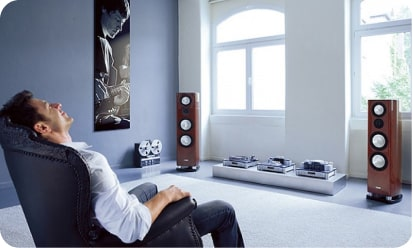

Vă readuceposibilitatea de a auzi
CannabisOil
- Rapid
- Eficient
- Fără operații
Mergeți cu mouse-ul deasupra nivelurilor de zgomot

Uneori este atât de liniște în jur încât trebuie să ascultați
și uneori este atât de tare încât sună în urechi
5 dB
căderea fulgilor de zăpadă
10 dB
respirație
20 dB
șoapte
40 dB
conversație
60 dB
muzică la boxă
80 dB
plânset de copil
100 dB
concert
120 dB
bubuitură de tunet
130 dB
limita volumului urechii
220 dB
explozie atomică
315 dB
Căderea meteoritului Tunguska 30 iunie 1908 — cel mai puternic sunet înregistrat vreodată în istoria omenirii.
Intensitatea unui sunet în zona de percepție auditivă variază de la 0 până la 140 dB. Astfel, volumul unei șoapte este de — 20 dB, iar a unei conversații de — 40—60 dB. Sunetul la 120—130 dB provoacă supraîncărcare cu posibile traume auditive.
Problemele încep cu o șoaptă
Sunetul este oscilația particulelor în spațiu, care sunt captate de organele auzului. Dacă unul sau mai multe organe auditive sunt deteriorate, percepția sunetelor este distorsionată, înăbușită sau nu mai auzim cu totul.
Dacă nu puteți desluși sunetul unei șoapte sau nu îl auziți deloc, atunci auzul dumneavoastră este deja redus. Pentru a evita pierderea parțială sau completă a auzului, tratamentul trebuie început de la primul semn de scădere a auzului.
Cauzele scăderii auzului
Capacitatea de a asculta lumea înconjurătoare este un dar de la natură, de care vă puteți bucura toată viața, dar în același timp îl puteți pierde într-o clipă.
Scăderea auzului se împarte în două tipuri — conductiv și neurosenzorial.
Pierderea auzului neurosenzorial duce la probleme de auz la anumite frecvențe, afectând audibilitatea anumitor voci sau, de exemplu, a consoanelor. Pierderea auzului conductiv are ca rezultat, de obicei, un sunet înfundat.
Pierderea auzului senzorineural:
- administrarea de medicamente, toxice pentru organele auditive (anumite antibiotice, antiinflamatoare etc.);
- toxine industriale (benzen, anilină);
- infecții (gripă, encefalită transmisă de căpușe, meningită, rujeolă, oreion, scarlatină, difterie, sifilis);
- perturbarea metabolismului și dereglări vasculare (diabet zaharat, hipotiroidism, hipertensiune arterială, accident vascular cerebral);
- tumori (neurinom acustic);
- traume și vătămări (mecanice, expunerea la sunete puternice sau fluctuații de tensiune);
- modificări naturale de vârstă.
Pierderea auzului conductiv:
- dopuri de ceară;
- defecte ale membranei timpanice rezultate din traumatisme sau otite;
- traumatisme mecanice ale urechii, introducerea și extragerea unui corp străin;
- hemoragie la nivelul urechii medii;
- ruperea conexiunilor dintre osiculele auditive (traumatisme, inflamații);
- tumori false (colesteatom);
- tumori adevărate (cancer al canalului auditiv).
Readuceți-vă
capacitatea de a vă bucura de sunete
Pentru a restabili auzul, în primul rând, trebuie să eliminați cauzele care au dus la scăderea acestuia - scăpați de dopul care s-a format, tratați otita, nu mai ascultați muzică tare etc.
Dacă nu aveți o cauză clară sau dacă pierderea auzului este legată de vârstă, începeți să luați Cannabis Oil.
Cannabis Oil este un ulei de canabis concentrat în capsule, adaptat pentru administrarea în scopuri medicale. Fitocanabinoizii din compoziția Cannabis Oil sunt saturați cu un grup de vitamine și aminoacizi care acționează activ asupra regenerării accelerate a canalului auditiv.
Administrarea Cannabis Oil este sigură pentru organism.
Beneficiul canabisului este în fiecare capsulă
Substanțele speciale din compoziția uleiului de canabis acționează ca un element de reconstrucție a celulelor corpului uman.
Capsulele Cannabis Oil activează procesele de regenerare și restaurare a celulelor organelor auditive în caz de leziuni mecanice, traumatice, neurosenzoriale și infecțioase ale membranei timpanice, nervului auditiv, celulelor piloase.
Uleiurile active de canabis refac circulația sângelui și transmiterea impulsurilor sonore către creier, îmbunătățesc percepția sunetului. La o aplicare în decursul unui tratament – are loc restabilirea completă a auzului.
VĂ RUGĂM, ACORDAȚI ATENȚIE! Cantitatea de produse Cannabis Oil, necesară pentru rezultatul dorit, este determinată în mod individual și în cazuri speciale poate fi crescută.
Părerea expertului
Andrei Cazacu
Doctor în științe medicale, docent, vechime în muncă de 24 de ani.
Doctor în științe medicale, expert în domeniul diagnosticului, tratamentului și reabilitării tulburărilor de auz. Andrei Cazacu participă la simpozioane profesionale în calitate de lector. Portofoliul de lucrări științifice al specialistului cuprinde peste 50 de articole tipărite.
Problemele de auz pot apărea dintr-o varietate de motive, de la modificări legate de vârstă și gene, până la leziuni la cap și urechi, boli infecțioase și cronice. Prin urmare, oricine, la orice vârstă, poate experimenta pierderea auzului.
Persoana vine deja la consultație cu probleme serioase. Este rar ca cineva să abordeze problema la timp, pentru care ulterior trebuie să plătească cu măsuri extreme: operații, cure de medicamente puternice (în cazul infecțiilor virale) și așa mai departe. Majorității pacienților le este prescris aparatul auditiv – se întâmplă rar să fie restabilit un auz bun.
Dar acum totul este altfel. Datorită noilor remedii, refacerea auzului devine din ce în ce mai ușoară. Un lider printre acestea este – Cannabis Oil. În clinica noastră, tuturor pacienților li se prescrie ca adjuvant în reabilitarea auzului după intervenții chirurgicale, tratament complet și prevenire. În practică 8 din 10 pacienții și-au restabilit complet auzul doar datorită Cannabis Oil.
Vă readuceposibilitatea de a auzi
CannabisOil
- Rapid
- Eficient
- Fără operații
Cristian Geambașu
57 de ani
Am cumpărat Cannabis Oil pentru tatăl meu, la bătrânețe auzul i s-a înrăutățit puternic. Cumva l-am forțat să urmeze acest tratament, mult timp s-a împotrivit. Dar acum măcar aude bine! Nu mai trebuie să-mi forțez corzile vocale când vorbesc cu el, iar când pornesc televizorul nu mai trebuie să dau volumul la maxim. Cu Cannabis Oil nu mai este nevoie să cumpărați un aparat auditiv.
Anghel Diaconu
53 de ani
Am cumpărat Cannabis Oil cu speranța disperată de a restabili auzul după o vătămare gravă a capului. Cu urechea stângă aproape că nu auzeam nimic, cu dreapta așa și așa. Chiar mă gândeam să-mi cumpăr un aparat auditiv, dar am decis să fac altceva – și anume să urmez un tratament cu Cannabis Oil, care mi l-a recomandat un doctor bun. Așa că tratamentul cu acest remediu m-a ajutat să-mi readuc auzul! Nu cu 100%, dar aud cu urechea stângă și dreaptă aproape la fel și foarte bine, dacă e să compar cu ce am avut înainte de acest tratament.
Ana Coman
35 de ani
Din copilărie am probleme cu urechile. Numai puțin dacă mă expun la frig, încep să mă doară urechile și-mi crește temperatura. Înainte trebuia mereu să-mi pun picături în urechi, ca să reduc din durere, de aceea m-am obișnuit ca tot timpul să aud sunete îndepărtate. Acum o jumătate de an am observat că chiar și cu picăturile acestea tot am probleme cu urechile. M-am dus la un specialist pe care-l cunoșteam, el mi-a recomandat să urmez un tratament cu Cannabis Oil. Așa și am făcut. Auzul a revenit 100%, acum mi se pare că aud chiar cum vecinii de la 2 etaje superioare respiră.
Maria Velișcu
44 de ani
Pe mine remediul Cannabis Oil m-a ajutat cu problemele de auz și desigur, nu e vreun remediu minune, dar își face efectul și-și face efectul bine. Mi s-a potrivit acest remediu, nu a provocat alergii, are rezultate. Per total, sunt mulțumită, pot recomanda.